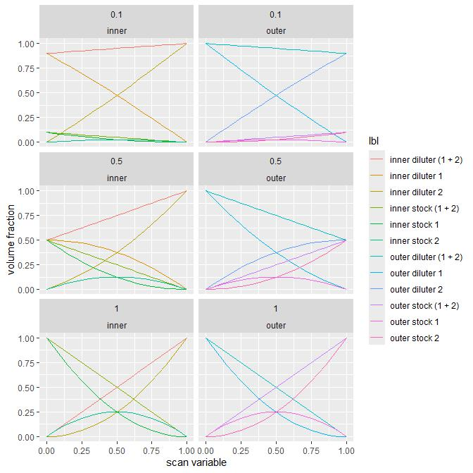

The folder contains files required to run 3i1D_HLD_scan_v3. The scan simultaneously varies 3 variables - EACN, salinity, and ratio between concentration of oil soluble surfactant and concentration of aqueous phase soluble surfactant.
The scan assumes that a tested system contains two surfactants, one oil and one water soluble.
Setup files assumes that user has:
3i1D_HLD_scan_v3__setup_configuration.py)3i1D_HLD_scan_v3__execute.py)SMPL WST: Sample waste; here remaining sample is
discarded after measurement.
WASH1 WST: Wash 1 waste; here a washing fluid is
discarded after first set of washing steps.
WASH2 WST: Wash 2 waste; here a sample fluid is
discarded after washing steps with a sample fluid
WASH1: A washing fluid source vial
RAQ1: A run stock of aqueous phase 1;
RAQ2: A run stock of aqueous phase 2;
RO1: A run stock of oil phase 1;
RO2: A run stock of oil phase 2;
SAQ1: A main stock of aqueous phase 1;
SAQ2: A main stock of aqueous phase 2;
SO1: A main stock of oil phase 1;
SO2: A main stock of oil phase 2;
DAQ1: A dilution fluid for aqueous phase 1;
DAQ2: A dilution fluid for aqueous phase 2;
DO1: A dilution fluid for oil phase 1;
DO2: A dilution fluid for oil phase 2;
WASH: A location of washing fluid for
distribution;
'9/A1': "INNER STCK1",
'9/A2': "INNER DIL1",
'9/A3': "INNER STCK2",
'9/A4': "INNER DIL2",
'9/B1': "OUTER STCK1",
'9/B2': "OUTER DIL1",
'9/B3': "OUTER STCK2",
'9/B4': "OUTER DIL2"DATA_PATH: an absolute path to this set of
experiment(s)LOG_PATH: an absolute path to log file generated during
a scanCONFIG_PATH: an absolut path to folder that contains
configuration files (opentron, mixing graph, measurement)SOLUTION_REPOSITORY_PATH: an absolute path to solution
repositoryc_surfactant_experiment: a concentration of a
surfactant in oil used in an experiment; float value that is less or
eaqul to c_surfactant_stockc_surfactant_stock: a concentration of a surfactant in
main oil stock, it is expected that both oil stocks contain the same
concentration.c_surfactant_aq_experiment: a concentration of a
surfactant in aqueous phase used in an experiment; float value that is
less or eaqul to c_surfactant_aq_stockc_surfactant_aq_stock: a concentration of a surfactant
in main aqueous stock, it is expected that both aqueous stocks contain
the same concentration.
| solution | fraction |
|---|---|
| inner stock 1 | (1-x) * x_dilute * (1-x) |
| inner diluter 1 | (1-x) * (1 - x_dilute * (1-x)) |
| inner stock 2 | x * x_dilute * (1-x) |
| inner diluter 2 | x * (1 - x_dilute * (1-x)) |
| outer stock 1 | (1-x) * x_dilute * x |
| outer diluter 1 | (1-x) * (1 - x_dilute * x) |
| outer stock 2 | x * x_dilute * x |
| outer diluter 2 | x * (1 - x_dilute * x) |
x_dilute = c_surfactant_experiment / c_surfactant_stockx_dilute = {0.1, 0.5, 1.0}
stocks in settings file contains names of
various solutions used in experiment. The solutions are stored in the
solution repository associated with the experiment(s). The names given
in this section have to match exactly names of solutions availabel in
the solution repository. E.g. heptane and
Heptane are two different names!surfactant_in_oil_1: a name of main stock of an oil
phase 1,surfactant_in_oil_2: a name of main stock of an oil
phase 2,oil_1: a name of a diluter of an oil phase 1,oil_2: a name of a diluter of an oil phase 2,stock_aqueous_1: a name of main stock of an aqueous
phase 1,stock_aqueous_2: a name of main stock of an aqueous
phase 2,diluter_aqueous_1: a name of diluter fluid of an
aqueous phase 1,diluter_aqueous_2: a name of diluter fluid of an
aqueous phase 2,blank: a generic name of blank configuration files used
as templatestart: a label of start configurationend: a label of end configurationto_reuse: a label of configuration to be reused; handy
in case when some intermediate solutions are prepared in previous runs
and can be reusedexperiment_metadata: string entries of user defined
metadata; these fields are added into experimental datan_approximation: integer, not used at the moment, leave
value at 0slot 2:
A1$ A2 A3 A4 A5 A6
SMPL WST WASH1 WST WASH2 WST WASH1 empty empty
0.5 0.5 0.5 1.4 0 0
B1 B2 B3 B4 B5 B6
empty empty empty empty empty empty
0 0 0 0 0 0
C1 C2 C3 C4 C5 C6
empty empty empty empty empty empty
0 0 0 0 0 0
D1 D2 D3 D4 D5 D6
empty empty empty empty empty empty
0 0 0 0 0 0
slot 9:
A1 A2 A3 A4 A5
SAQ1 DAQ1 SAQ2 DAQ2 -
12 12 12 12 -
B1 B2 B3 B4 B5
SO1 DO1 SO2 DO2 -
12 12 12 12 -
C1 C2 C3 C4 C5
- - - - -
- - - - -
($) - each well is described with 1) address label, 2) role, 3)
volume; - well not used; empty - an empty
eppendorff to mix inner solutions
Setup requires:
[variable name in scan_settings.json]:
[description]↩︎